풀림 마스터(스튜디오 생산·스토어 유통·스터디 소비) 中 풀림 Q 는 "소비" 영역. 본 워크스페이스는 학생 단일 role 로 단순화 — 다른 도메인 메타·mock·nav 는 추출 시 모두 제거.
고1~고3 + 재수생. 동기 = 수능·내신 점수, 두려움 = 학습 중단·앱 옮겨다님. 메인 디바이스는 태블릿 (가로=데스크탑 비율 / 세로=모바일 비율).
진단 → 처방 → 풀이 → 해설 → 정복 → 갱신. /q/analysis/diagnose 에서 시작해 /q/review 까지 dead-end 0 으로 닫힘. (5-18 flow audit 으로 dead route 0 달성)
모의고사 = 무한풀기 시험 모드, 인덱스+풀이분석 = 분석, 오답정복+기억장치 = 복습, 튜터+코치 = AI 대화.
proc/spec/02-product-definition.md · proc/spec/03-features-and-ia.mdHue 는 풀림 블루 + 슬레이트 중립, 강조는 풀림 레몬. 시맨틱(success warn danger) 은 의미 운반에만. 2026-05-13 채도·명도 조정으로 시각 위계 강화.
Primary CTA 1개 / 상태 뱃지 / 데이터 시각화 / 시험 모드 알림 — 그 외 hero·환경 텍스트·장식은 슬레이트+blue-50 으로 빠짐. (5-13 saturation rebalance)
--spacing-section: 1.5rem (24px 페이지 최상위) + --spacing-section-heading: 1rem (16px). 7 라우트 + e2e 가드. (5-14)
proc/spec/08-design-system.md §1·§14 · archive 2026-05-13_q-color-saturation-rebalance.md · archive 2026-05-14_q-section-spacing-tokens.md
각 라우트는 "내부 콘텐츠만" 책임지고, 좌측 사이드바·하단 탭·우측 FAB 는 셸이 통합 제공. nav-config 가 단일 진실.
5-18 audit 에서 /me placeholder 제거로 BottomNav 5탭 → 4탭.
섹션 prefix 진입 시 children 전용으로 swap. 5-18 audit: 5개 sub-section 모두 "소개하기" 항목 제거 (dead route).
Q 홈 · 무한풀기 · 분석 · 복습. /me 슬롯 제거 — 풀림 Q 단독 환경에서 학생 내정보 미구현, dead-end 차단.
모바일 44×44 icon-only, 데스크탑 라벨 pill. 학습 집중 화면 3종 (/q/talk, /q/infinity/solve, /q/review/conquer) 은 hide.
풀이 중 nav 링크 가드 통과 후 라우팅. beforeunload + popstate hook. (PR #42 + #43 hotfix)
src/components/shell/nav-config.ts (4탭) · bottom-nav.tsx grid-cols-4 · archive 2026-05-15_q-coach-fab-mobile-occlusion.md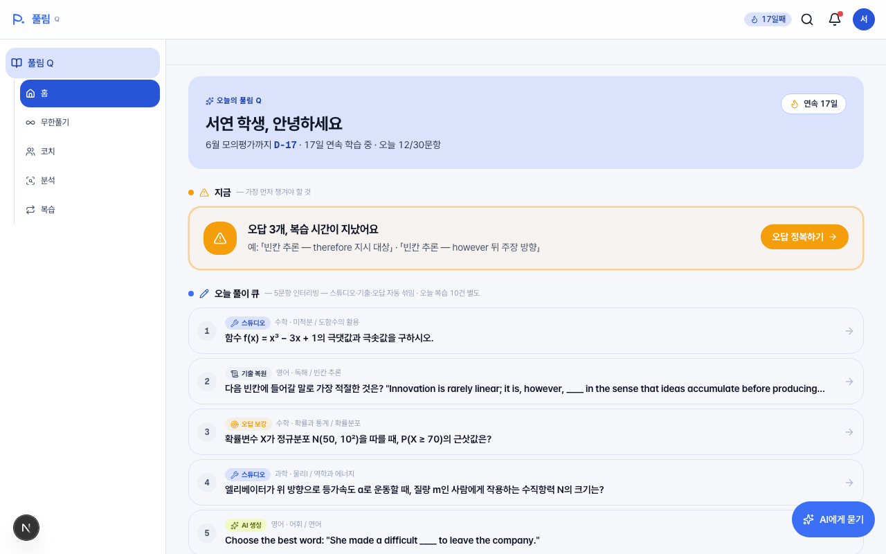
pickNowAction() 분기: leitner_overdue / memory_overdue / prescription / free 中 첫 매칭만 (한 화면 = 한 결정점)/q/external/* 페이지 + PULLIM_DOMAINS mock 도 함께 삭제src/app/(student)/q/page.tsx · 6단계 루프 진입점 (spec §1.1)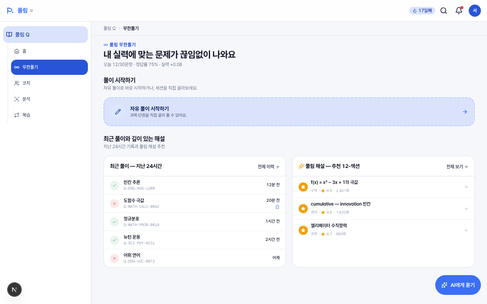
submittedAt 7일 이내일 때만 노출 (시험 안 본 학생 dead UI 제거).
src/app/(student)/q/infinity/page.tsx · solveHistory 최근 5건 · PR #58 §2.5 (exam 조건부)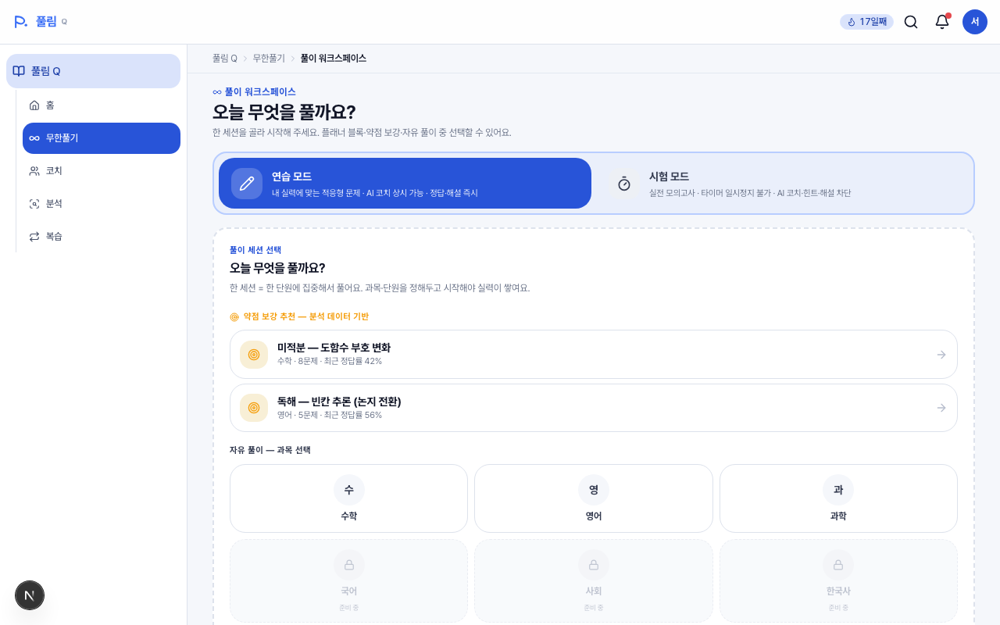
badge 필드 제거 → label + description + 배경 색의 3겹 신호로 충분2026-05-13_solve-resume-and-leave-guard.md · PR #52 badge 제거 · PR #43 popstate hotfix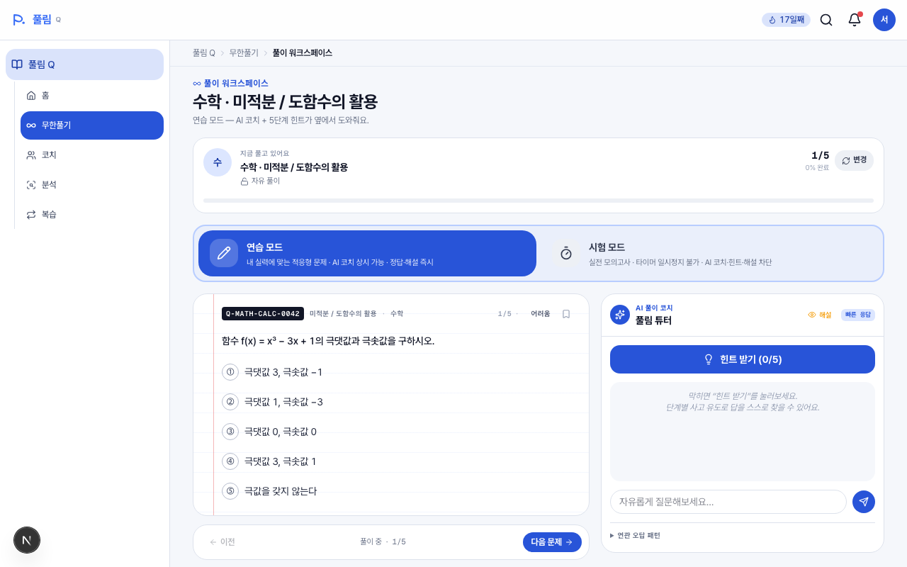
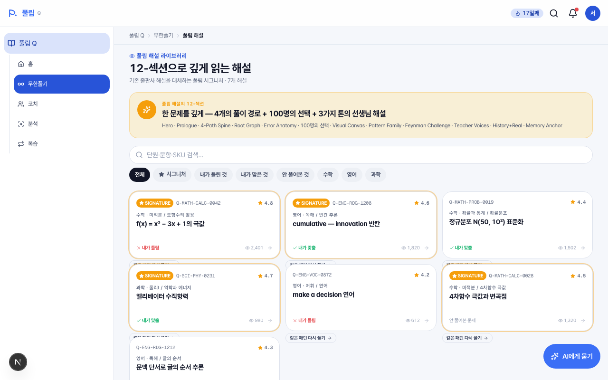
/q/analysis/{sku}?from=library (학습 허브 진입)/q/infinity/solve?kind=retry&sku= — "같은 패턴 다시 풀기"src/app/(student)/q/infinity/explain/page.tsx ExplainCard · PR #58 §2.6 retry CTA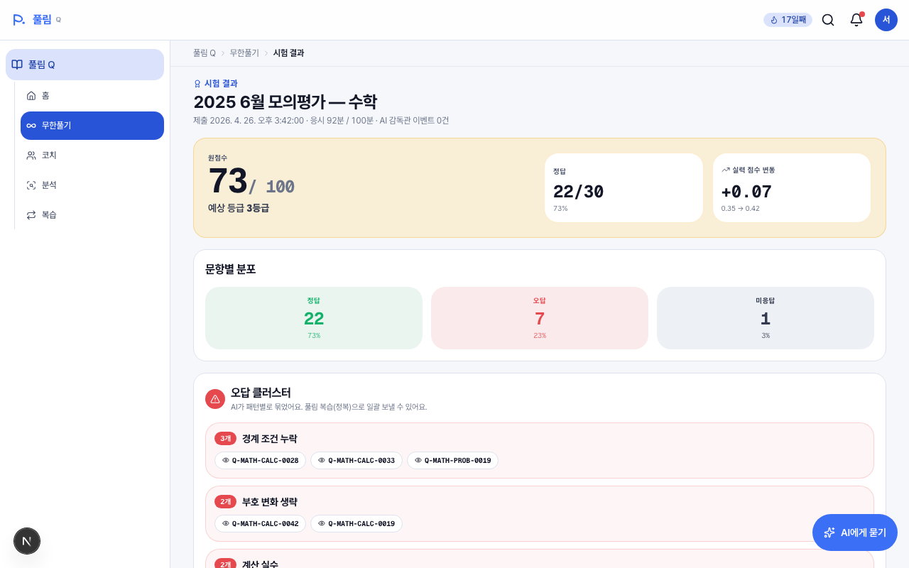
from-warn to-warn/80 풀톤 → "위험 메시지" 처럼 느껴짐bg-warn-bg 톤다운. 정보(73/100, +0.07)는 유지, 시각 부담만 ↓/q/infinity/explain/{sku}/q/infinity/solve/q/infinity/history (5-18 audit §3.2 — history 진입 +1)2026-05-13_q-color-saturation-rebalance.md §4.2 warn-bg · PR #59 §3.2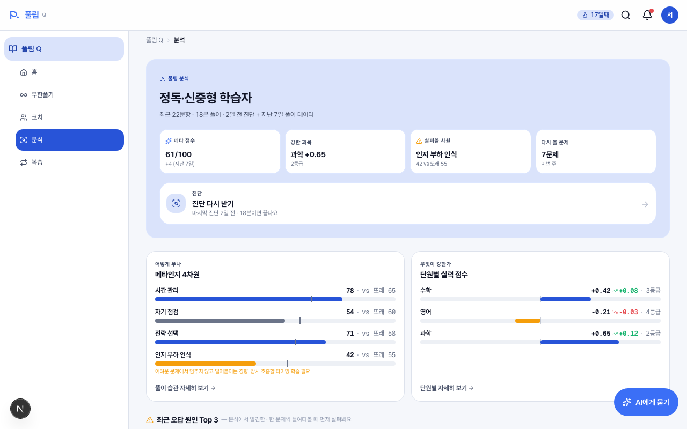
/q/analysis/{sku})lastDiagnosis.daysAgo >= nextRecommendedIn 분기 — overdue 시 강한 톤 "지금 받기 권장", 미충족 시 잔잔한 톤2026-05-13_q-analysis-visual-redesign.md · PR #55 DiagnoseCTA · PR #58 §2.7 lateral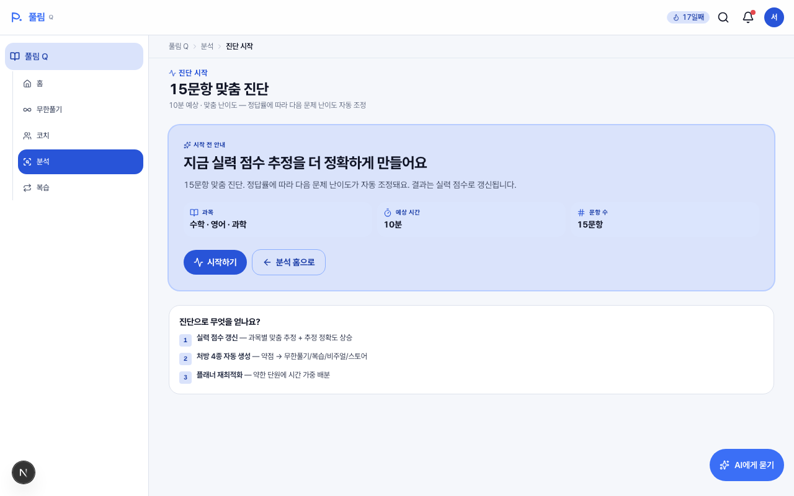
/q 홈 (조건부), /q/analysis DiagnoseCTA, /q/analysis/ability 재진단.
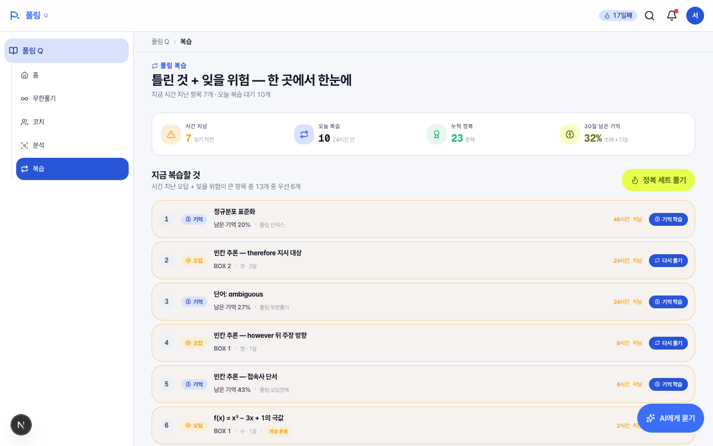
slice(0, 8) 하드 컷 — 9번째 이후 존재 자체가 UI 에 안 드러남queueOverflow 지표. N=10,000+ 확장 가능 골격 (페이지네이션 본격은 G1 합의 대기)2026-05-13_review-priority-queue-scalable-layout.md (active, G1 합의 대기) · PR #46 첫 단계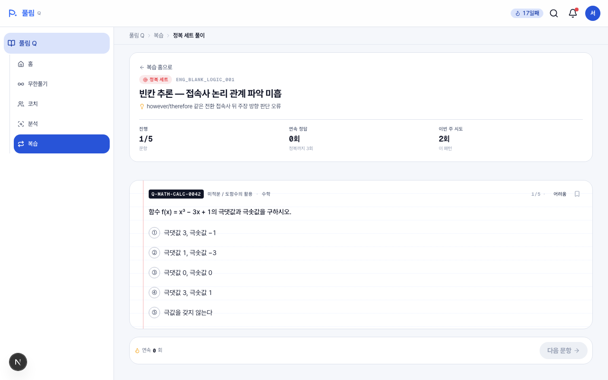
/q/review 의 정복 CTA 클릭 시 이동 전 안내 ("5문항 연속 / 3회 연속 정답 / 결과 자동 반영" + 다음부터 보지 않기)DialogTrigger → <button onClick> race fix (defensive)bg-success-bg pill + text-success2026-05-13_curea-deep-pre-route-explainer-dialog.md · PR #47/48 · PR #58 §2.8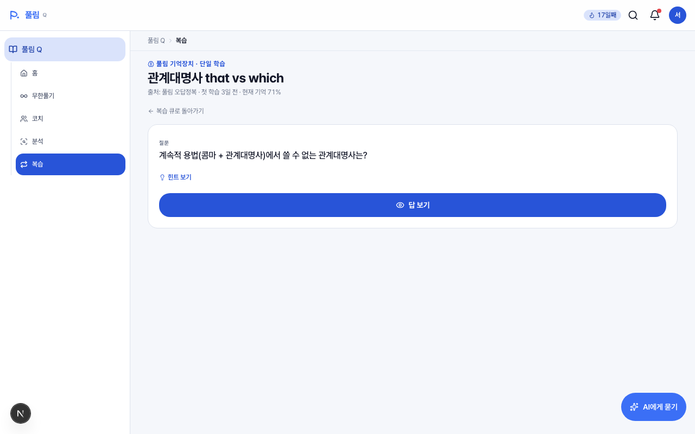
/q/review 큐 row, /q/analysis today-review-preview, /q/analysis/{questionId} next-learning-cards2026-MM-DD_q-memory-single-screen-density.md)2026-05-18_q-ux-audit-important-nit-sweep.md §1.I5 별도 plan 권장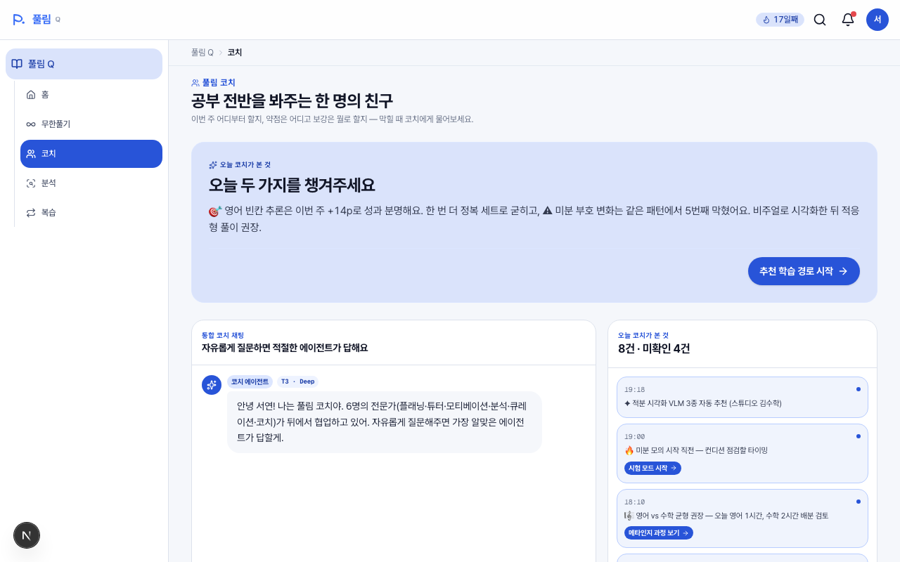
grid-cols-[1.5fr_1fr] — 코치 채팅(좌) + 활동 타임라인(우)사용자 지적("무한풀기/분석 소개하기 진입점이 없잖아") 으로 시작해 학생 라우트 전수 grep + 진입·이탈 매트릭스 작성. 11 finding (Critical 3 / Important 5 / Nit 3) 모두 6 PR (#54~#59) 로 마감.
onboarding 5개 dead (PR #54) · /q/analysis 진단 CTA 부재 (PR #55) · /q/talk 다음 액션 없음 (PR #56)
external placeholder (PR #57) · infinity exam 조건 / explain retry / ability↔process / conquer momentum (PR #58) · /me placeholder (PR #59)
RecentMistakes 진입 확인 (이미 해결) · history 진입 +1 (PR #59) · 외부 도메인 노이즈 (Phase 4 cascade)
룰 D 신설 (CONVENTION §6.D): "라우트는 in-page CTA 없으면 존재할 수 없다."
새 라우트 PR 시 grep -rn 'href="/new-route"' src/ 자가 점검.
proc/research/2026-05-18_flow-audit/findings.md6 plan 신설 (color sweep · analysis 비주얼 · review priority · solve-resume · curea-deep dialog · spacing tokens). 30 캡처 UX audit 자기검증으로 Critical 3 + Important 5 + Nit 4 발견.
PR #43 LeaveGuard hotfix · #44 색 PR-C · #45 audit + plan · #46 review-priority 첫 단계 (룰 C "이월 plan 첫 단계만" 첫 적용)
#47~#53: UX audit 잔여 + CoachFab 안2 + N1+I3 카피 sweep + 7 plan archive. #54~#59: flow audit Phase 1~5 + 잔존 마감.
① 학생은 멍청이 가정 — 친절·예측가능성 최우선
② 데이터 단절 회피 — 통합 흐름이 한 워크스페이스에
③ 모바일 우선 + N=10,000+ 가정 — 최악 인프라 가정
feedback_user_is_dumb_friction_zero · feedback_plan_worst_case_infra · CONVENTION §6.A~§6.Dproc/spec/ · proc/archive/ · proc/plan/ · proc/research/2026-05-18_flow-audit/findings.md 에 박혀 있고,
변경이 필요할 때 같은 폴더에서 찾으면 됩니다.